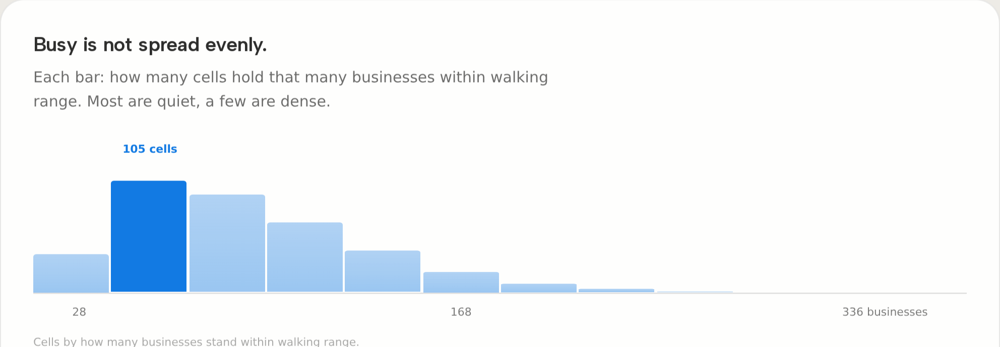
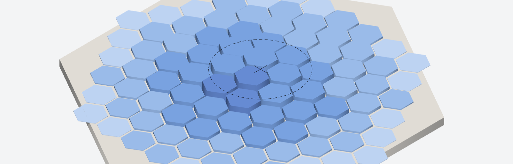
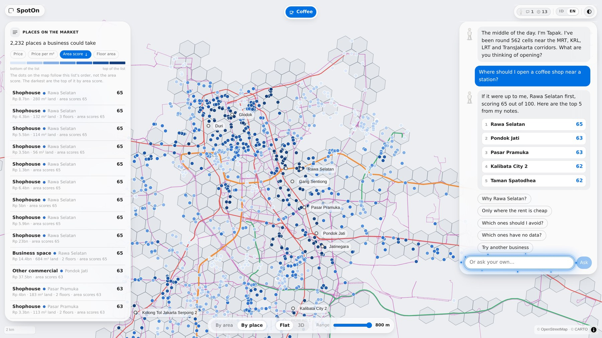

SpotOn
SpotOnDon't guess where to open. Ask the map.
An AI-assisted WebGIS for retail and F&B site selection around Jakarta's transit network. Demand, competition and available space, scored per walkable cell and explained in plain language.
Universitas Bina Nusantara
MAPID WebGIS Competition 2026
Maps That Think! · Final
Farhan Aulianda · Frontend and WebGIS
Anthony Gilles Rudolfo · GIS analysis, UI and UX
Background & Problem Statement
The blocks around Jakarta's MRT, KRL, LRT and TransJakarta stops are the busiest trading ground in the city. Yet most owners still choose a location on instinct, a hunch, or by copying a competitor. The wrong choice means an early closure and capital lost.

Objective & Solution
Objectives
- Bring demand, competition and available space into one Opportunity Score per cell and business type.
- Explain every score step by step, with the number of data points behind it.
- Say "not surveyed" where data is missing, instead of interpolating a plausible value.
Solution
SpotOn is a decision-support WebGIS. Jakarta is covered with an H3 hexagonal grid, and the 562 cells with a transit stop within an 800 m walk are scored for 13 business types. Tapak, the AI guide inside the map, answers plain-language questions in Indonesian or English with the reasons attached.

Data & Methodology
| Source | What it contributes | Count |
|---|---|---|
| MAPIDData Premium | Competitor points, 13 types | 24,630 |
| MAPID AppsMissions | Field records, 4 missions | 1,027 |
| OSMOverpass | Transit stops, POIs, hours | 1,105 |
| MAPIDProperty | Listings with asking prices | 3,547 |
Field records never enter the score. A grounding check drops any AI sentence quoting a figure the engine did not compute.
WebGIS & Key Features


Results & Insights
Coffee shops, all 562 cells
| Top catchments | Score | Rivals | Units |
|---|---|---|---|
| Rawa Selatan | 65 | 5 | 12 |
| Pondok Jati | 63 | 10 | 9 |
| Pasar Pramuka | 63 | 14 | 5 |
Why Rawa Selatan? 273 other businesses within 800 m put the trade around it at 96 out of 100. Only 5 coffee shops stand in the same range, so competition reads 9. 12 units are on the market at a median of Rp 40.2m per m², and 4 transit nodes are within walking range.
Minimarkets tell the opposite story: 529 cells competitive, 32 saturated, only 1 underserved. The gaps are few and specific, which is what a site finder needs.
709 of the 1,027 field records fall inside the grid, across 191 cells. 55 property records offer space for rent, the only rental signal for Jakarta.
Benefits & Applications
Benefits
- Less risk of opening in the wrong place.
- Small businesses compete on data, with no GIS skills.
- Every figure traceable to its source and its N.
Target users and applications
- Investors and franchise teams screening transit sites.
- First-time owners asking what fits near home.
- Survey planning: unscored cells guide the next mission.
- Other cities: swap the transit data and catalogue.
Conclusion
Site selection around transit was decided on instinct because demand, competition and available space were never counted together. SpotOn counts them per walkable cell from MAPID and OpenStreetMap data and turns them into one transparent Opportunity Score for 13 business types. The result is insight rather than raw points: ranked catchments, a typology for every cell, a card that takes each score apart, and an AI guide that explains it while every number stays computed by the engine.
Future development
- Grow the field surveys to cover the 100 unscored cells.
- Read formality tier and storefront quality from mission photos.
- Rent listings, more business types, a mobile-first card.
Open the WebGIS

vercel.appScan to open SpotOn. Desktop and mobile, Indonesian and English, no install.
Source: github.com/VennethN/SpotOn. SvelteKit and MapLibre GL on the MAPID MAPS basemap, deployed on Vercel.
Transit and business data © OpenStreetMap contributors (ODbL). Business points, listings and field notes from MAPID Data Premium and MAPID Apps, within the competition's terms.